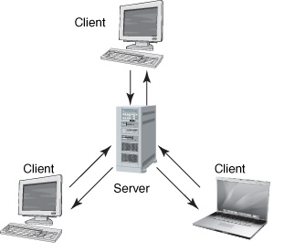
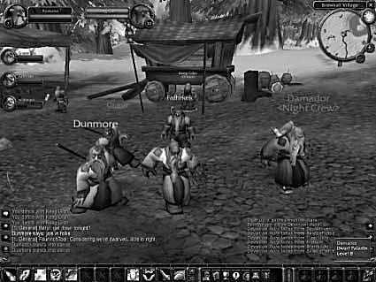

{% include JB/setup %}
{% raw %}
<div>
<a name="toppage" class="pcalibre calibre1"></a><table width="100%" border="0" cellspacing="0" cellpadding="0" class="sfbody"><tr valign="top" class="calibre2"><td class="calibre3"><a name="MainContent" class="pcalibre calibre1"></a><table width="95%" class="sfbody"><tr class="calibre2"><td class="pcalibre1 v"><!--Copyright (c) 2002 Safari Tech Books Online--><table width="100%" border="0" cellspacing="0" cellpadding="2" class="calibre4"><tr class="calibre2"><td valign="middle" class="v1 pcalibre1" height="5"></td></tr><tr class="calibre2"><td valign="middle" class="v1 pcalibre1"><table cellpadding="0" cellspacing="0" border="0" width="100%" class="calibre4"><tr class="calibre2"><td class="calibre6"><span class="calibre7"> </span>
                   
                  <span class="calibre7">   </span>
             <span class="calibre7"> </span></td></tr></table></td><td class="calibre8"/><td valign="middle" class="v2 pcalibre1"> 
           
          <span class="calibre7"><a target="_self" href="ch01lev1sec2.html" title="Previous section" class="pcalibre calibre1"></a></span>
				
				 
				
				<span class="calibre7"><a target="_self" href="ch01lev1sec4.html" title="Next section" class="pcalibre calibre1"></a></span></td></tr></table><div id="section" class="calibre15"><table width="100%" border="0" cellspacing="0" cellpadding="0" class="calibre4"><tr class="calibre2"><td valign="top" class="calibre8">Security Game Programming Networking Programming Greg Hoglund Gary McGraw Addison Wesley Professional Exploiting Online Games: Cheating Massively Distributed Systems<a name="ch01lev1sec3" class="pcalibre calibre1"></a>
<h3 id="title-IDA0VUMP" class="docSection1Title">Games Are Software, Too</h3>
<p class="docText">MMOs are made out of software, and all software has defects. As we describe in our book <span class="docEmphasis">Exploiting Software</span>, both implementation bugs and design flaws are vulnerabilities that can be exploited by hackers (see <a class="pcalibre6 pcalibre5 calibre1" href="ch05.html#ch05">Chapter 5</a> of this book for our current take on bugs and gaming software). All of the tools and techniques in the attacker's toolkit can be and are applied to MMO software. Many of the ideas we describe in this book are as old as the hills, but they do have one thing in common—the techniques explained here all leverage the fact that MMOs are simply software programs.</p>
<a name="ch01lev2sec4" class="pcalibre calibre1"></a>
<h4 id="title-IDASWUMP" class="docSection2Title">Basic Game Architecture</h4>
<p class="docText">Most MMOs follow the same basic architecture. A central bank of servers (sometimes many banks) is constructed to allow communications with gamers in real time over the Internet. Gamers use programs called clients on their own Internet-connected PCs. Many times this client software must be purchased through a retailer, but sometimes the client software is given away for free. <a class="pcalibre6 pcalibre5 calibre1" href="#ch01fig02">Figure 1-2</a> shows an illustration of basic game architecture.</p>
<a name="ch01fig02" class="pcalibre calibre1"></a><p class="calibre28"><center class="calibre29">
<h5 class="docFigureTitle">Figure 1-2. Basic architecture of an MMO. Gamers use client software on their own PCs to connect to a central game server.</h5>
</center></p><p class="docText">
</p>
<br class="calibre15"/>
<p class="docText"><a name="iddle1086" class="pcalibre calibre1"></a><a name="iddle1087" class="pcalibre calibre1"></a><a name="iddle1547" class="pcalibre calibre1"></a><a name="iddle1551" class="pcalibre calibre1"></a><a name="iddle1909" class="pcalibre calibre1"></a><a name="iddle2101" class="pcalibre calibre1"></a>To make a client work with the central servers, most MMOs require a subscription model.</p>
<a name="ch01lev2sec5" class="pcalibre calibre1"></a>
<h4 id="title-IDA2BVMP" class="docSection2Title">The Game Client</h4>
<p class="docText">Game clients are software programs that run on a gamer's PC. Client software takes input from the user and communicates with the central servers over the Internet. The client software usually displays a view of the virtual world showing location, other players, messages, and so on. <a class="pcalibre6 pcalibre5 calibre1" href="#ch01fig03">Figure 1-3</a> shows a screenshot from WoW. This is a typical game client view.</p>
<a name="ch01fig03" class="pcalibre calibre1"></a><p class="calibre28"><center class="calibre29">
<h5 class="docFigureTitle">Figure 1-3. Client software from WoW allows a user to interact with the game. The client software runs on a gamer's PC and communicates with a central server. (From &lt;<a class="pcalibre6 pcalibre5 calibre1" target="_blank" href="http://compactiongames.about.com">http://compactiongames.about.com</a>&gt;; used with permission.)</h5>
</center></p><p class="docText">
</p>
<br class="calibre15"/>
<a name="ch01lev2sec6" class="pcalibre calibre1"></a>
<h4 id="title-IDANDVMP" class="docSection2Title">Client-Side State</h4>
<p class="docText"><a name="iddle1109" class="pcalibre calibre1"></a><a name="iddle1917" class="pcalibre calibre1"></a><a name="iddle2072" class="pcalibre calibre1"></a><a name="iddle2099" class="pcalibre calibre1"></a><a name="iddle2102" class="pcalibre calibre1"></a><a name="iddle2103" class="pcalibre calibre1"></a><a name="iddle2148" class="pcalibre calibre1"></a>Things happen in games, especially those with thousands of players interacting in real time. The game has an engine in the middle that takes all of the user input and updates the game as time unfolds. The game has state in the same sense that any computer program has state. The state of a system is defined as the collection of the current values of all memory locations, all secondary storage, and all registers and other components of the system.<sup class="docFootnote"><a class="pcalibre6 pcalibre5 calibre1" href="#ch01fn07">[7]</a></sup></p><blockquote class="calibre24"><p class="docFootnote1"><sup class="calibre31"><a name="ch01fn07" class="pcalibre calibre1">[7]</a></sup> See Computer Security: Art and Science by Matt Bishop (Addison-Wesley, 2005).</p></blockquote>
<p class="docText">The problem is that the Internet today is not fast enough to allow all of the game state to reside on the server and to be instantaneously pushed down to all clients in parallel. To solve this problem and to make the game action appear to be seamless, game designers allow the client software to preserve and manage some state.</p>
<p class="docText">Though there are good reasons to allow the client to preserve state, any client-side state presents serious security risks. As we describe in <a class="pcalibre6 pcalibre5 calibre1" href="ch02.html#ch02">Chapter 2</a>, client-side state is one of the primary targets for attackers.</p>
<p class="docText">Another serious security issue involves time. Advanced attacks on distributed systems often involve manipulating state over time.<sup class="docFootnote"><a class="pcalibre6 pcalibre5 calibre1" href="#ch01fn08">[8]</a></sup> When communication with a server is essential, race conditions and other attacks that take advantage of time are important to consider. One of the most commonly used duping attacks against WoW involved a race condition made available when a server was rebooted on its regular schedule.</p><blockquote class="calibre24"><p class="docFootnote1"><sup class="calibre31"><a name="ch01fn08" class="pcalibre calibre1">[8]</a></sup> See Chapter 12 of Software Security: Building Security In by Gary McGraw (Addison-Wesley, 2006).</p></blockquote>
<a name="ch01lev2sec7" class="pcalibre calibre1"></a>
<h4 id="title-IDARGVMP" class="docSection2Title">Analogies to Other Applications</h4>
<p class="docText">Many software applications involve complex interactions of clients and servers over time. Some of the most important are online auctions run by financial houses for things like Treasury bonds and more pedestrian auctions run for everyday people on eBay. Over the years, distributed real-time applications have undergone rigorous security analysis and substantial <a name="iddle1031" class="pcalibre calibre1"></a><a name="iddle1033" class="pcalibre calibre1"></a><a name="iddle1035" class="pcalibre calibre1"></a><a name="iddle1036" class="pcalibre calibre1"></a><a name="iddle1037" class="pcalibre calibre1"></a><a name="iddle1040" class="pcalibre calibre1"></a><a name="iddle1294" class="pcalibre calibre1"></a><a name="iddle1354" class="pcalibre calibre1"></a><a name="iddle1598" class="pcalibre calibre1"></a><a name="iddle2157" class="pcalibre calibre1"></a><a name="iddle2224" class="pcalibre calibre1"></a><a name="iddle2327" class="pcalibre calibre1"></a>redesign to mitigate risk. Some of the lessons learned by the auction builders should be applied to MMOs.</p>
<ul class="calibre18"></ul></td></tr></table><table width="100%" border="0" cellspacing="0" cellpadding="2" class="calibre4"><tr class="calibre2"><td valign="middle" class="v1 pcalibre1" height="5"></td></tr><tr class="calibre2"><td valign="middle" class="v1 pcalibre1"><table cellpadding="0" cellspacing="0" border="0" width="100%" class="calibre4"><tr class="calibre2"><td class="calibre6"><span class="calibre7"> </span>
                   
                  <span class="calibre7">   </span>
             <span class="calibre7"> </span></td></tr></table></td><td class="calibre8"/><td valign="middle" class="v2 pcalibre1"> 
           
          <span class="calibre7"><a target="_self" href="ch01lev1sec2.html" title="Previous section" class="pcalibre calibre1"></a></span>
				
				 
				
				<span class="calibre7"><a target="_self" href="ch01lev1sec4.html" title="Next section" class="pcalibre calibre1"></a></span></td></tr></table><table width="100%" border="0" cellspacing="0" cellpadding="2" class="calibre4"><tr class="calibre2"><td valign="top" class="calibre14"><span class="calibre7"></span></td></tr></table></div><!--IP User 2--></td></tr></table></td><td class="calibre3">
                         
                      </td></tr><tr class="calibre2"><td colspan="3" valign="bottom" class="calibre3"><br class="calibre15"/><p class="v5 pcalibre1"></p><br class="calibre15"/></td></tr></table></div>

{% endraw %}

